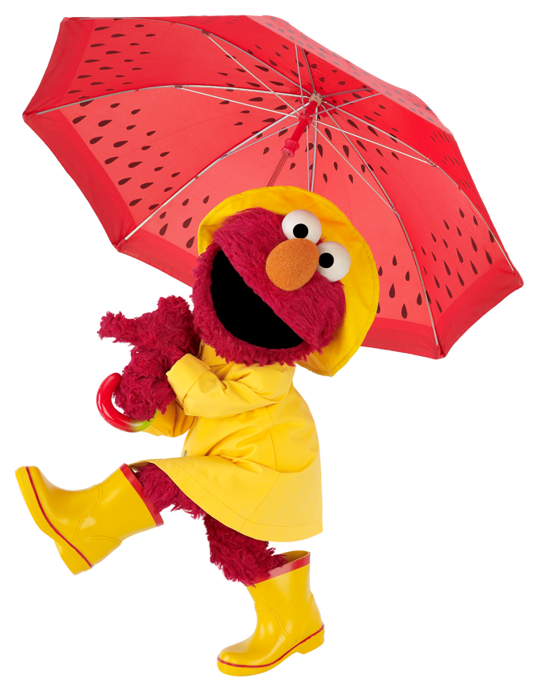
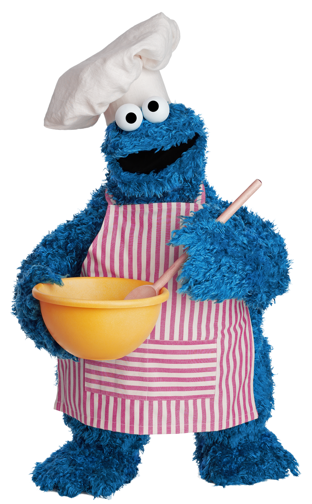
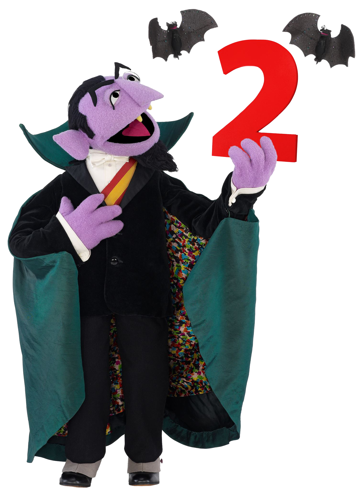

CONHEÇA A VILA SÉSAMO
"Adaptação: A versão brasileira foi criada como uma adaptação de Sesame Street, um programa infantil americano lançado em 1969.
Nome: O nome "Vila Sésamo" foi escolhido porque a pesquisa indicou que o conceito de "vila" ou "bairro" se adequava melhor ao público infantil brasileiro da época do que o termo "rua".
Primeira versão: A primeira versão brasileira foi ao ar entre 1972 e 1977."

"Com 2,49 metros de altura, o Garibaldo é um pássaro amarelo de 6 anos e meio, muito dócil."
"Educação: O programa tem o objetivo de educar e divertir crianças, ensinando sobre o alfabeto, números, cores e raciocínio.
Valores: Também foca em transmitir valores como a importância da resolução de conflitos, higiene pessoal e, em versões mais recentes, cidadania, diversidade e inclusão.
Recursos: Utiliza a interação entre atores brasileiros e bonecos (muitos deles baseados nos originais da versão americana)."

"Com 2,49 metros de altura, o Garibaldo é um pássaro amarelo de 6 anos e meio, muito dócil."
"Nova versão: Em 2016, o programa passou por uma reformulação, ganhando uma nova identidade visual e o nome Sésamo.
Temas atuais: A nova versão passou a abordar temas atuais, contando com a participação de diversas celebridades brasileiras para promover o debate sobre cidadania e inclusão."

"Com 2,49 metros de altura, o Garibaldo é um pássaro amarelo de 6 anos e meio, muito dócil."